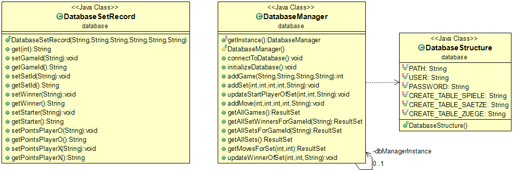

<body>
Das <code>database</code> enthält die Klassen zur Initialisierung und Manipulation der Datenbank.
Beinhaltet die Klassen <code>DatabaseManager.java</code>, <code>DatabaseSetRecord.java</code> und <code>DatabaseStructure.java</code>
<br>
	<figure>
		
		<figcaption>Klassenstruktur des Packages</figcaption>
	</figure>

</body>